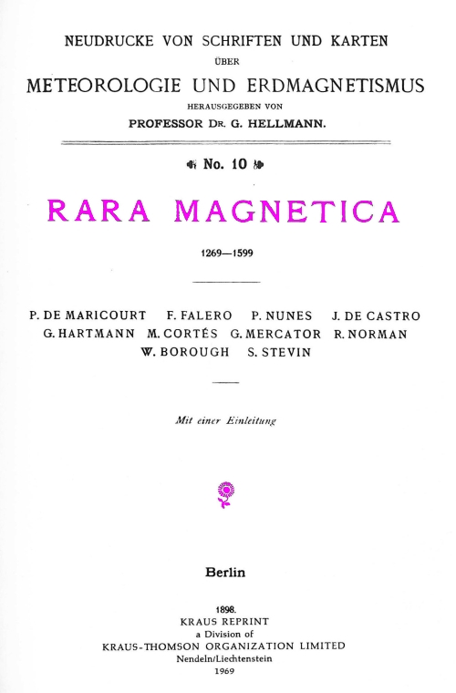

|  |
In 1898, Gustav Hellmann
published his anthology called Rara
magnetica (1269-1599). With this collection, he aimed at making
available some of the earliest, yet rare publications in the field of
geomagnetism that predated William Gilbert's De magnete of 1600. This website has a similar goal. While the concept of rarity has deeply changed in the digital era, it still needs ways to re-publish relevant but understudied sources – or sources that are not available in modern machine readable editions but should be. This website will therefore publish less and well known sources for the study of magnetsm in the premodern era. It will include both images and texts and provide tools to investigate each of them independently and both of them in combination. This research emerged within the research group Visualizing Science in Media Revolutions at the Bibliotheca Hertziana, Max Planck Institute for Art History in Rome. Go to rara magnetica in the top navigation bar and get started! |